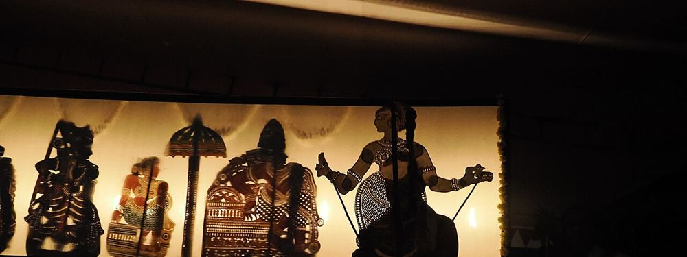

The Journey
How Abhilash Got Here
Six chapters, each one a step up in scale, complexity and ownership.
Engineering depth → Architectural breadth → Enterprise leverage
Abhilash CR
A career shaped by increasing scale, complexity, ownership and impact.
A small spark.
A long journey.
A bigger fire.
The next chapter is about scale.
How Abhilash Got Here
Six chapters, each one a step up in scale, complexity and ownership.
Engineering depth → Architectural breadth → Enterprise leverage
The Journey • 01
The professional journey began in a global enterprise environment.
IBM • Bangalore
The Journey • 02
An early business-facing assignment connected engineering directly to commercial outcomes.
Ekomate
The Journey • 03
A global internal platform transformed fragmented capacity planning.
LogicaCMG
The Journey • 04
International exposure, product evolution and principal-level engineering broadened the influence.
Alterian Technologies
The Journey • 05
The role evolved from engineering into architecture and modernization.
M*Modal
The Journey • 06
Today, architecture, AI, data, security and business development converge.
SakSoft
Swipe, use the arrow keys, or tap the arrows to turn the page.
What Abhilash Builds
Six kinds of work, from products and platforms to running a business, and the capabilities and blueprint behind them.
The Work • 01
Built enterprise applications, CMS platforms, clinical documentation platforms, commerce solutions and internal business platforms.
The Work • 02
Designed HLD/LLD, SOA, microservices, hybrid infrastructure and modernization strategies for complex enterprise environments.
The Work • 03
Modernized legacy platforms, centralized infrastructure and redesigned workflows to improve productivity and reduce operational overhead.
The Work • 04
Architecting Microsoft Fabric lakehouses, Medallion architectures, Delta/OneLake ecosystems and secure RAG/GenAI capabilities.
The Work • 05
Building security-conscious architectures across hybrid networks, firewalls, WAF, Private Links, Entra ID and AI governance.
The Work • 06
Beyond technology, built and operated a manufacturing business, managing CapEx, procurement, workforce, vendors and an eventual corporate exit.
The Work • 07
The disciplines behind the work, from the boardroom to the pipeline.
01
02
03
04
05
06
The Work • 08
The languages, platforms, products and tools the work is built with.
The Work
Different industries. Different technologies. Same instinct:
understand the problem → build the system → make it scale.
Swipe, use the arrow keys, or tap the arrows to turn the page.
Where Abhilash Advises
From building systems to helping leaders make technology and business decisions.
“Technology becomes more powerful when you understand the business that carries it.”
The Advisory • 01
Business ownership added a commercial and operating lens to technology leadership.
Co-Founder & Strategic Director
2013 – 2018
The Advisory • 02
A software company where Abhilash provides technical direction and solution architecture.
Technical Solutions & Technology Vision
What Abhilash advises on
The Advisory • 03
A microfinance business where Abhilash focuses on board-level technology, financial operations and business oversight.
Board Advisory & Financial Operations
What Abhilash advises on
Swipe, use the arrow keys, or tap the arrows to turn the page.
About Abhilash
Beyond the role, a few things keep him grounded and energized.
A professional identity is only one part of a person.
The Person • 01
A lifelong follower of the Premier League, LaLiga and the Champions League, Abhilash lives for the game beyond the scoreline. Arsenal and Barça are close to the heart—and the 2025–26 season made it unforgettable, with Arsenal lifting the league title after two decades.
Here’s to many more seasons, stories and celebrations.
The Person • 02
Regular drives down South to visit parents and in-laws are more than journeys. They’re a chance to slow down, reconnect with schoolmates and neighbors, and spend time around the village that still feels like home.
Some roads take you back to where you belong.
The Person • 03
Spirituality gives Abhilash a space for reflection, discipline and inner growth. He believes energy cannot be created or destroyed—it only transforms or transfers. To him, that eternal energy is what we call God.
Different paths. One source.
The Person • 04
Every summer, he loses himself in the thunder of Palakkad’s festival drums and the shadow-play of Tholpavakoothu. Wandering among towering tuskers and the firelit fields with friends, his eyes don’t just capture the ritual — it pieces together who he is.

Swipe, use the arrow keys, or tap the arrows to turn the page.
What Abhilash Thinks
Things Abhilash Has Learned the Hard Way.
“Use AI. But make sure you still know how to do the work.”
AI is a copilot. Your brain still needs a driving license.
“The moment you hear ‘software,’ remember one thing: it can break.”
Usually five minutes before the demo.
“Technology should enable humans—not turn humans into technology support staff.”
If people are working for the system, we designed the wrong system.
“LinkedIn is not the source of truth.”
Everyone is transforming something over there. 😄
“Your EMI and electricity bill don’t care whether you made a profit last month.”
Cash flow has an excellent memory.
“If a piece of paper can solve the problem, don’t write 10,000 lines of code.”
The cheapest architecture sometimes comes with a pen.
“Time is the best teacher.”
And occasionally, it brings back the same exam just to check whether you actually learned anything.
“Saying YES gets you noticed. Learning to say NO gets you respected.”
I learned that one later than I should have.
Talk to Abhilash
Let's build what's next.
Open to conversations with GCC leaders, technology executives and organizations solving complex transformation challenges.